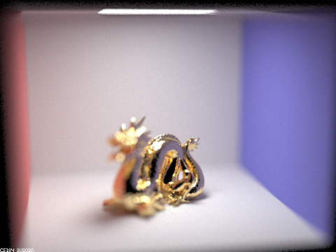

In this project, we extended our ray tracing system to render more complex and visually interesting scenes. We did this by adding support for mirror and glass materials as well as support for depth of field effects through a parameterizable thin lens approximation.
Our team worked on this project by creating two separate, complete implementations of the project. We did for two reasons. Firstly, we believe that this helps both of us have a much stronger grasp on the material as a lot of the value of this class comes from the process of implementation itself. Secondly, we found this to be a productive means for debugging as having two parallel versions allowed us to more quickly catch and diagnose bugs by swapping in different components across versions until it worked correctly so as to narrow down the source of the issue.
In this part, we implemented support for mirror and glass materials. These effects rely heavily on multi-bounce illumination to produce their effects, and so to demonstrate our implementation we consider the same CBspheres.dae scene as we modulate the maximum ray depth:
| Max ray depth = 0 |
|---|
As expected, in zero bounce illumination, we only see light originating from the light source. This is not quite so interesting as none of our objects are illuminated, so let's continue.
| Max ray depth = 1 |
|---|
With one bounce, we can only see direct reflections. This is why we see the light source and nothing else on both the mirror and glass ball. Additionally, we don't actually see anything except these reflections at depth 1 because no light is able to bounce off scene surfaces.
| Max ray depth = 2 |
|---|
With two bounces, we see two interesting things.
Firstly, the mirror ball now shows a reflection of the scene! This is expected as light can now bounce off the scene and the mirror before hitting the camera. We can actually see this exact behavior by carefully inspecting the mirror ball's reflection. Observe that the glass ball in the reflection appears entirely black (except for the reflection on top). This, obviously, is not currently the case for the glass ball as it is not just black in the current scene. Rather, what is happening is that the mirror ball is only able to reflect the state of the scene one bounce ago (i.e. the scene as it appeared to the camera with ray depth 1) since the other bounce is consumed by reaching the camera.
Secondly, the glass ball still does not refract any light and instead only has more more complete scene reflections. We do not expect refraction yet, however, because rays are only able to refract and not actually reach any lights with a depth of two (camera->refract->scene, expired!). Additionally, we can also observe that the reflections on the glass ball take on the same behavior as the mirror ball by inspecting the far left edge of the ball since it shows the mirror ball appears all black in the reflection except for the reflection of the light.
| Max ray depth = 3 |
|---|
At three bounces, the mirror ball continues to display the scene from one ray depth less (as discussed earlier). The glass ball, however, changes enormously and has a number of effects worth discussing.
First, we finally see refraction rather than just reflection! This appears here (and not at depth 2) because our rays are now actually able to make it to the light. This does two things. First, and most obviously, we see the refraction in action by the fact bits of the blue wall appear on the left side of the ball (which is not possible without refraction). Additionally, we see a bright spot on the floor which is caused by the light from above being refracting, causing the ball to behave like a lens.
| Max ray depth = 4 |
|---|
With four bounces, the effects become slightly more subtle. We may observe that the bright spot on the floor causes a reflection on the bottom of the sphere as well as a second bright spot on the wall to the right of the ball. This, similarly, occurs due to the light on the floor refracting at an oblique angel.
| Max ray depth = 5 |
|---|
With five bounces the differences become much fainter. The only interesting here is that the mirror ball shows the bright spot on the right wall through the ball. Since the spot is approximately on the center of the ball, this can be seen as a refraction which is nearly perpendicular to the surface, which explains why the dot has about the same brightness/spread on the surface of the mirror as it does on the wall.
| Max ray depth = 100 |
|---|
Finally, at 100 bounces not much changes. The scene continues to brighten and, as a result, the top of the glass ball has an increasingly strong reflection from light bouncing from the ceiling.
In this part we added support for a thin lens approximation. We did this because our previous tracer used a pinhole camera model which caused everything in the scene to appear in focus, which can be undesirable as it is not how we perceive the world. Pinhole camera models cause everything to appear in focus as every point in space can map to at most one location on the imaging plane as any other rays which could reach that point are blocked by the pinhole barrier. This prevents any point aliasing, which yields a perfectly sharp image for all points. A lens, however, does not have this property except for objects at its focal distance. When an object is nearer or further than the focal distance, the rays of a given point on the object do not converge at a single point and instead scatter, causing point aliasing. This point aliasing appears as blurring and it is a natural part of how we perceive the world through our eyes.
To demonstrate the value of this addition, we consider the visual effect of a thin approximation lens as we modify a few key parameters. First, we consider the CBdragon.dae scene as we rack the focus (radius held at 0.3):
| d = 4.35 | d = 4.56 |
|---|---|
| d = 4.8 | d = 5 |
|---|---|
|  |
By inspecting the images, we can observe that as the focal distance increases, the region of the scene that appears in focus shifts backwards as expected.
Next, we consider the effect of modifying the aperture (focal distance held at 4.56):
| b = 0.5 | b = 0.25 |
|---|---|
|
| b = 0.125 | b = 0.06 |
|---|---|
As expected, when the aperture (i.e. radius) decreases, the amount of scene in focus increases. This makes sense because as the aperture asymptotically approaches zero, it approximates a perfect pinhole camera in which everything is in focus.